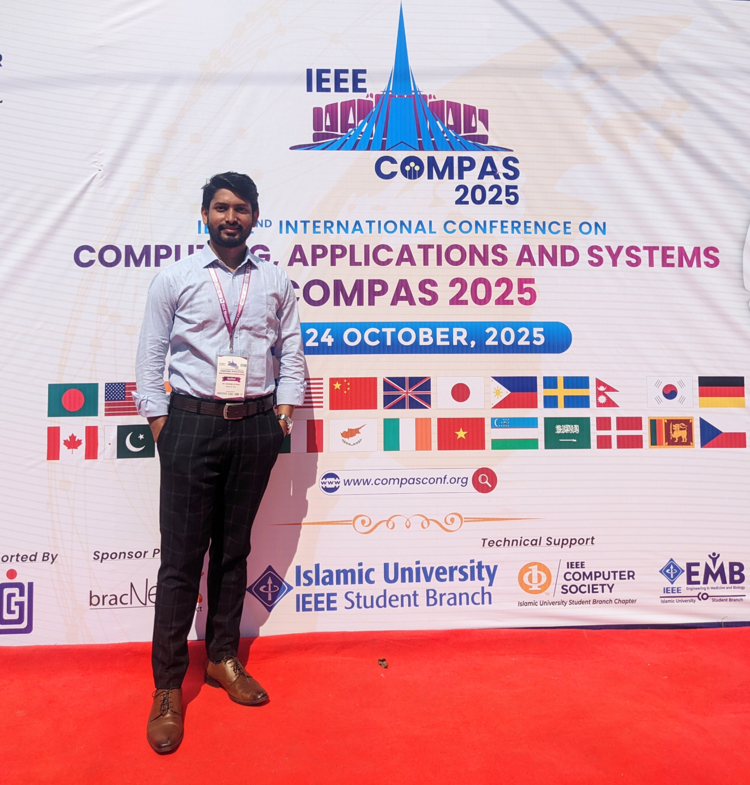
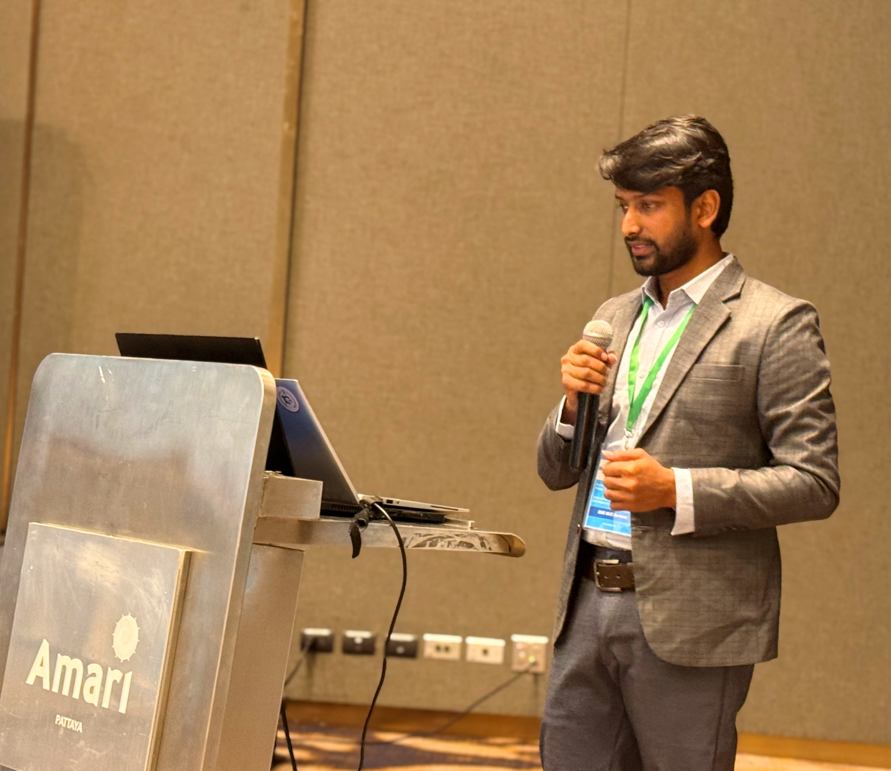

Abdullah Al Siam
Cybersecurity Researcher
aasiam.cs@gmail.com · Personal Website · Google Scholar · ORCID · IEEE Author Profile · Semantic Scholar · DBLP · Web of Science · LinkedIn · GitHub X (Twitter) · Facebook
About Me
Abdullah Al Siam is a cybersecurity researcher specializing in artificial intelligence, threat intelligence, and cyber defense systems. His research interests include AI for cybersecurity, intelligent security operations, malware analysis, and intrusion detection, with a focus on real-world cyber defense applications. He has authored more than 15 peer-reviewed research publications in leading international journals, including IEEE Access, Wiley, and Elsevier, and serves as a reviewer for the IEEE Access journal. In addition to research, he has practical experience in security operations, bridging academic research with operational cyber defense environments.
Websites
🌐 Personal Website: sites.google.com/view/abdullah-al-siam
Professional Role
Associate Security Operator
Digital Payments Limited (Pathao Pay) – Fintech Engineering
- Security Monitoring & Incident Response
- Threat Detection & Analysis
- SOC Operations
- Security Automation
- Compliance & Reporting
Research Interests
Academic research affiliation with Daffodil International University
Publications
Journal Articles
- A Comprehensive Review of AI’s Current Impact and Future Prospects in Cybersecurity — IEEE Access (Q1). Link
- IP SafeGuard: An AI-Driven Malicious IP Detection Framework — IEEE Access (Q1). Link
- Diegif: An Efficient and Secured DICOM to EGIF Conversion Framework for Confidentiality in ML Training — Results in Control and Optimization (Q2). Link
- Securing the Unseen: A Comprehensive Exploration Review of AI-Powered Models for Zero-Day Attack Detection — Expert Systems (Wiley) (Q2). Link
Conference Articles
- Secure Medical Imaging: A DICOM to JPEG 2000 Conversion Algorithm with Integrated Encryption — ICAIC 2025
- Artificial Intelligence for Cybersecurity: A State of the Art — ICAIC 2025
- Artificial Intelligence in Nanotechnology: Key Methodologies and Their Transformative Impact — CICN 2025
- A Robust Algorithm for Identifying Malicious IPs Enhancing Cybersecurity Defense — MPCON 2025
- Automating Malware Detection and Response via Real-Time Threat Feed Integration with Wazuh SIEM — COMPAS 2025
- AI-Driven Secure Semantic Communication with Dynamic Encryption for Real-Time Data Integrity — ICECIE 2025
- TransCall: A Transformer-Driven Framework for Zero-Day Malware Detection Using System Call Sequences — ICAIC 2026
- Real-Time Multi-Source Threat Intelligence Fusion Using Large Language Models — ICAIC 2026
- Explainable Machine Learning for Malware Detection: A SHAP-Based LightGBM Framework — ICAIC 2026
*Full publication list available on Google Scholar .
Tools & Technologies
- SIEM: ArcSight, Wazuh, Elastic/Kibana
- EDR: CrowdStrike Falcon
- IPS: Trellix
- VA/PT: Nessus, Burp Suite, Metasploit
- Networking: Wireshark
- OS: Linux (Ubuntu, RHEL), Windows Server
- Code: Python, Bash, C/C++
Projects
| Project | Description |
|---|---|
| Wazuh Malware Detection Lab | Custom rules and dashboards for Linux malware telemetry. |
| Insider Threat Simulation Toolkit | Log emitter to simulate insider behaviors for SOC drills. |
| Threat Intel Feed Integrator | Python ingestion/enrichment for OpenCTI/MISP feeds. |
| Brute Force Detection Dashboard | OpenSearch visualizations for auth abuse patterns. |
| OWASP Top 10 Toolkit | Scripted detection & lab exercises for trainees. |
Academic Qualifications
| Exam | Field | Institute | Result | Year | Notes |
|---|---|---|---|---|---|
| B.Sc. | Software Engineering (Cybersecurity) | Daffodil International University | CGPA 3.88/4.00 | 2023 | Graduated with Distinction |
| HSC | Science | GCPSC | GPA 4.50/5.00 | 2018 | — |
| SSC | Science | Dewpara Gono High School | GPA 4.61/5.00 | 2016 | — |
Awards & Service
- 9th place — DIU Take Off Programming Contest (Fall 2019).
- Reviewer — IEEE Access (12 manuscripts in cybersecurity/AI).
Experience
| Role | Organization | Period | Duration |
|---|---|---|---|
| Associate Security Operator | Pathao Pay | Mar 2025 – Present | Current |
| SOC Analyst | Enterprise InfoSec Consultants (EIC) | Jun 2023 – Feb 2025 | 1y 9m |
| Researcher | Cyber Security Centre, DIU | Jul 2022 – Jan 2023 | 7m |
Total: ~2 years 6 months+
Certifications
- CEH, NDE, EHE — EC-Council
- SOC Analyst — Coursera
- CTI 101 — arcX
Contact
📍 Mirpur, Dhaka, Bangladesh
📧 aasiam.cs@gmail.com
☎ +8801776333900
References
Mr. Nuruzzaman Faruqui
Assistant Professor, Dept. of Software Engineering, DIU
faruqui.swe@diu.edu.bd · +8801763341153
Photo Gallery

Profile Photo

Research Recognition

Research Work

Achievement

Presenting Research at Bangkok,Thailand
Convocation Image